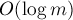

MAXimal
добавлено: 10 Jun 2008 18:08
редактировано: 23 Mar 2012 3:50
Содержание [скрыть]
Дискретное логарифмирование
Задача дискретного логарифмирования заключается в том, чтобы по данным целым  ,
,  ,
,  решить уравнение:
решить уравнение:
где и — взаимно просты (примечание: если они не взаимно просты, то описанный ниже алгоритм является некорректным; хотя, предположительно, его можно модифицировать, чтобы он по-прежнему работал).
Здесь описан алгоритм, известный как "baby-step-giant-step algorithm", предложенный Шэнксом (Shanks) в 1971 г., работающий за время за . Часто этот алгоритм просто называют алгоритмом "meet-in-the-middle" (потому что это одно из классических применений техники "meet-in-the-middle": "разделение задачи пополам").
Алгоритм
Итак, мы имеем уравнение:
где и взаимно просты.
Преобразуем уравнение. Положим
где  — это заранее выбранная константа (как её выбирать в зависимости от , мы поймём чуть позже). Иногда
— это заранее выбранная константа (как её выбирать в зависимости от , мы поймём чуть позже). Иногда  называют "giant step" (поскольку увеличение его на единицу увеличивает
называют "giant step" (поскольку увеличение его на единицу увеличивает  сразу на ), а в противоположность ему
сразу на ), а в противоположность ему  — "baby step".
— "baby step".
Очевидно, что любое (из промежутка — понятно, что такого диапазона значений будет достаточно) можно представить в такой форме, причём для этого будет достаточно значений:
Тогда уравнение принимает вид:
откуда, пользуясь тем, что и взаимно просты, получаем:
Чтобы решить исходное уравнение, нужно найти соответствующие значения и , чтобы значения левой и правой частей совпали. Иначе говоря, надо решить уравнение:
Эта задача решается с помощью метода meet-in-the-middle следующим образом. Первая фаза алгоритма: посчитаем значения функции  для всех значений аргумента , и отсортируем эти значения. Вторая фаза алгоритма: будем перебирать значение второй переменной , вычислять вторую функцию , и искать это значение среди предвычисленных значений первой функции с помощью бинарного поиска.
для всех значений аргумента , и отсортируем эти значения. Вторая фаза алгоритма: будем перебирать значение второй переменной , вычислять вторую функцию , и искать это значение среди предвычисленных значений первой функции с помощью бинарного поиска.
Асимптотика
Сначала оценим время вычисления каждой из функций и . И та, и другая содержит возведение в степень, которое можно выполнять с помощью алгоритма бинарного возведения в степень. Тогда обе этих функции мы можем вычислять за время .
Сам алгоритм в первой фазе содержит вычисление функции для каждого возможного значения и дальнейшую сортировку значений, что даёт нам асимптотику:
Во второй фазе алгоритма происходит вычисление функции для каждого возможного значения и бинарный поиск по массиву значений , что даёт нам асимптотику:
Теперь, когда мы сложим эти две асимптотики, у нас получится  , умноженный на сумму и , и практически очевидно, что минимум достигается, когда , т.е. для оптимальной работы алгоритма константу следует выбирать так:
, умноженный на сумму и , и практически очевидно, что минимум достигается, когда , т.е. для оптимальной работы алгоритма константу следует выбирать так:
Тогда асимптотика алгоритма принимает вид:
Примечание. Мы могли бы обменять ролями и (т.е. на первой фазе вычислять значения функции , а а второй — ), однако легко понять, что результат от этого не изменится, и асимптотику этим мы никак не улучшим.
Реализация
Простейшая реализация
Функция выполняет бинарное возведение числа в степень по модулю , см. Бинарное возведение в степень.
Функция производит собственно решение задачи. Эта функция возвращает ответ (число в промежутке ), точнее говоря, один из ответов. Функция вернёт  , если решения не существует.
, если решения не существует.
int powmod (int a, int b, int m) { int res = 1; while (b > 0) if (b & 1) { res = (res * a) % m; --b; } else { a = (a * a) % m; b >>= 1; } return res % m; } int solve (int a, int b, int m) { int n = (int) sqrt (m + .0) + 1; map<int,int> vals; for (int i=n; i>=1; --i) vals[ powmod (a, i * n, m) ] = i; for (int i=0; i<=n; ++i) { int cur = (powmod (a, i, m) * b) % m; if (vals.count(cur)) { int ans = vals[cur] * n - i; if (ans < m) return ans; } } return -1; }
Здесь мы для удобства при реализации первой фазы алгоритма воспользовались структурой данных "map" (красно-чёрным деревом), которая для каждого значения функции хранит аргумент  , при котором это значение достигалось. При этом если одно и то же значение достигалось несколько раз, записывается наименьший из всех аргументов. Это сделано для того, чтобы впоследствии, на второй фазе алгоритма, нашёлся ответ в промежутке .
, при котором это значение достигалось. При этом если одно и то же значение достигалось несколько раз, записывается наименьший из всех аргументов. Это сделано для того, чтобы впоследствии, на второй фазе алгоритма, нашёлся ответ в промежутке .
Учитывая, что аргумент функции на первой фазе у нас перебирался от единицы и до , а аргумент функции на второй фазе перебирается от нуля до , то в итоге мы покрываем всё множество возможных ответов, т.к. отрезок содержит в себе промежуток . При этом отрицательным ответ получиться не мог, а ответы, большие либо равные мы можем игнорировать — всё равно должны находиться соответствующие им ответы из промежутка .
Эту функцию можно изменить на тот случай, если требуется находить все решения задачи дискретного логарифма. Для этого надо заменить "map" на какую-либо другую структуру данных, позволяющую хранить для одного аргумента сразу несколько значений (например, "multimap"), и соответствующим образом изменить код второй фазы.
Улучшенная реализация
При оптимизации по скорости можно поступить следующим образом.
Во-первых, сразу бросается в глаза ненужность бинарного возведения в степень на второй фазе алгоритма. Вместо этого можно просто завести переменную и домножать её каждый раз на .
Во-вторых, таким же образом можно избавиться от бинарного возведения в степень и на первой фазе: в самом деле, достаточно один раз посчитать величину , и потом просто домножать на неё.
Таким образом, логарифм в асимптотике по-прежнему останется, но это будет только логарифм, связанный со структурой данных "> (т.е., в терминах алгоритма, с сортировкой и бинарным поиском значений) — т.е. это будет логарифм от  , что на практике даёт заметное ускорение.
, что на практике даёт заметное ускорение.
int solve (int a, int b, int m) { int n = (int) sqrt (m + .0) + 1; int an = 1; for (int i=0; i<n; ++i) an = (an * a) % m; map<int,int> vals; for (int i=1, cur=an; i<=n; ++i) { if (!vals.count(cur)) vals[cur] = i; cur = (cur * an) % m; } for (int i=0, cur=b; i<=n; ++i) { if (vals.count(cur)) { int ans = vals[cur] * n - i; if (ans < m) return ans; } cur = (cur * a) % m; } return -1; }
Наконец, если модуль достаточно мал, то можно и вовсе избавиться от логарифма в асимптотике — просто заведя вместо "> обычный массив.
Также можно вспомнить про хеш-таблицы: в среднем они работают также за  , что в целом даёт асимптотику .
, что в целом даёт асимптотику .